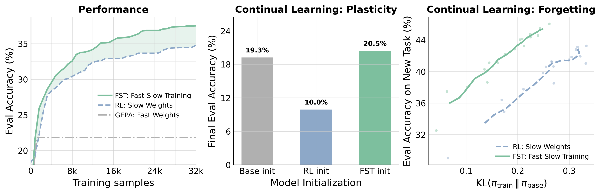
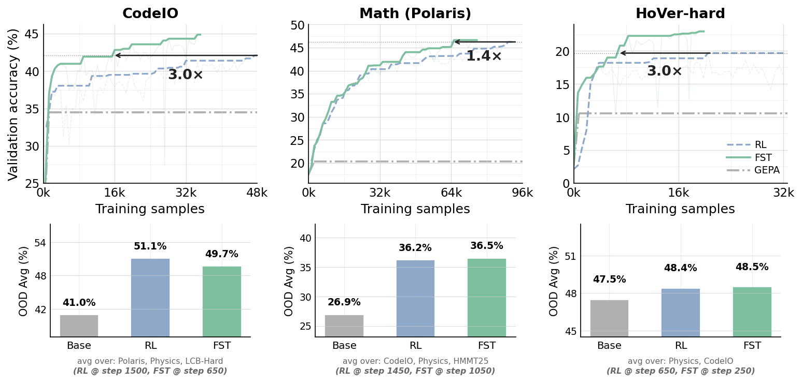
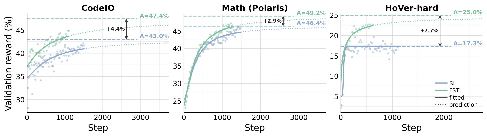
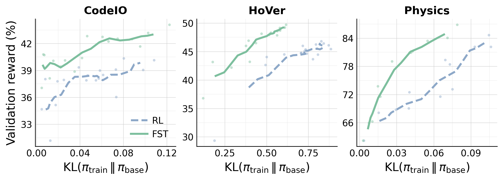
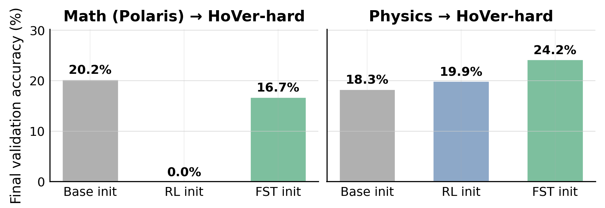
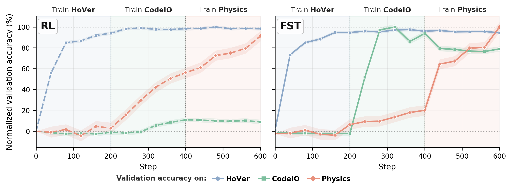
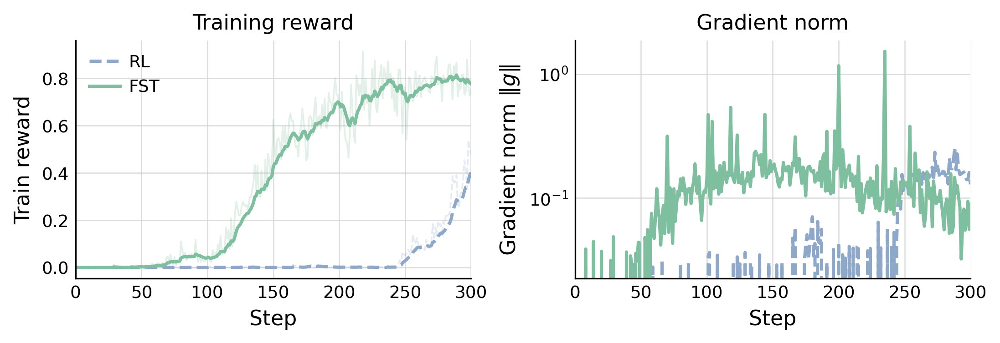
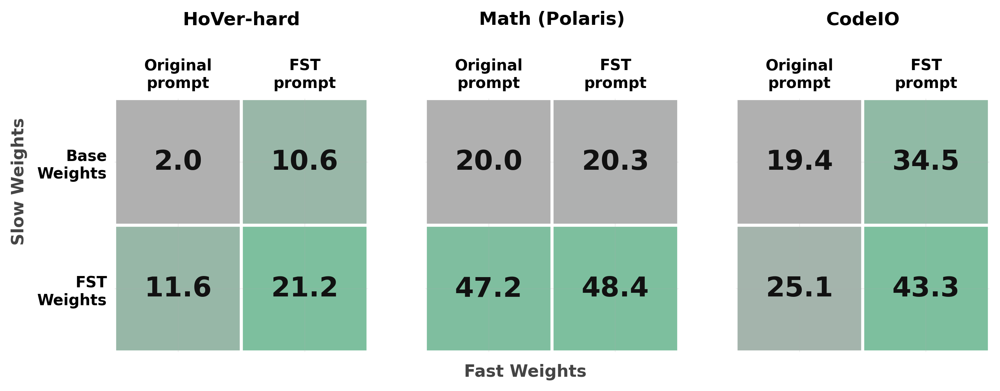

Learning, Fast and Slow: Towards LLMs That Adapt Continually
TL;DR. Adapting an LLM through parameter updates forces every improvement into a single persistent set of weights: task-specific tricks and general reasoning alike. This shrinks the model's distribution toward the trained task, eroding its capacity to learn new ones. Prompt optimization enables fast task-specific adaptations and hence sidesteps this, but cannot, on its own, match the performance ceiling of parameter updates.
We introduce Fast-Slow Training (FST), a paradigm for LLM training that optimizes the agent/context layer including prompts as "fast weights" and the network parameters as "slow weights", with the two updates interleaved during training. Fast weights encode task-dependent nuances; enabling slow weights to focus on general capabilities. Across math, code, and general reasoning benchmarks, FST beats weights-only training on every axis we measured. With one recipe, FST:
- Matches RL's performance with up to 3x fewer training steps and lifts the asymptotic ceiling under ScaleRL-style scaling-law fits.
- Reaches matched accuracy at ~70% lower KL divergence from the base, preserving the model's ability to keep learning (plasticity).
- Does a better job at continual learning where weights-only training stalls when the task switches.
The Quest for Adaptable General-Purpose AI
A north star in AI research is to build performant and scalable systems that adapt and learn on the fly across general, diverse sets of tasks.
The generality of our systems and their ability to solve problems they were not initially trained for has skyrocketed in the past 5 or so years due to LLMs and their capacity for in-context learning. Given the capability of current LLMs, it can be easy to forget that not too long ago the best way to, for example, detect if movie reviews were positive or negative was to train a discriminative sentiment classifier from scratch. While this paradigm of in-context learning has massively paid its dividends in terms of generality, directly updating the model parameters for a given task typically yields higher ceiling performance.
However, beyond compute costs, domain-specific finetuning imposes a set of restrictions on the model. For one, training a model on a narrow domain is known to degrade out of distribution performance. It can also decrease the ability to later finetune the model on new tasks. Though current models are quite general, there seems to be a tradeoff between how adaptable and how performant they are. What can we do to close this gap?
Is Reinforcement Learning Enough?
The emerging paradigm of reinforcement learning for LLMs has shown great promise in making models more performant across diverse tasks. Whether RL causes specialization and degrades future-task and out-of-domain performance remains an open question. Recent work argues on-policy updates change the model distribution minimally and don't induce forgetting [1] [2], yet heavy RL on a single domain does drastically shift the distribution in practice, e.g. the OpenAI goblin incident [3].
Even when on-policy, continual and episodic deep RL has long surfaced obstacles like primacy bias [4] (early data dominates the final policy), loss of plasticity [5] (the model becomes less able to learn new skills), and catastrophic forgetting [6] (old-domain performance tanks when learning a new one).
These obstacles have produced a rich literature of methods enabling learning across changing tasks [7] [8] [9] [10]. A common thread is equipping the model with both fast and slow components, an idea dating back to classic work by Schmidhuber [11] and Hinton [12]. Fast components quickly absorb task-specific information, while slow components build a general core of skills that transfers across tasks.
Fast and slow learning has an even richer history in neuroscience, via complementary learning systems theory [13] [14]. In this framing, the neocortex learns slowly to discover structure across experiences, while the hippocampus adapts quickly to new situations without disrupting the existing structure. New memories are then gradually ingrained into the neocortex over time.
Inspired by this literature, we propose…
Fast-Slow Training for LLMs


CodeIO, Math (Polaris), and HoVer-hard. Left: Evaluation accuracy on the trained task as training samples accumulate. FST reaches RL's peak with substantially fewer samples and converges to a higher ceiling than either RL or GEPA alone. Middle: Plasticity, the model's remaining ability to learn a new skill. After training on a first task, we continue with a fresh round of RL on a second task and report the final accuracy from each initialization. The RL-trained checkpoint barely learns the new task, while the FST-trained checkpoint roughly matches the base model. Right: How far each training run drifts from the base model, measured by KL(πtrain ∥ πbase). Smaller drift correlates with less forgetting of prior abilities; at matched accuracy, FST sits well to the left of RL.There is no good reason to restrict learning to being in-context or in-weights; humans themselves seem to learn at multiple time scales (e.g., System 1 vs System 2). We represent the model context as fast weights [15] and the model parameters as slow weights. Fast-Slow Training (FST) in LLMs presents a general blueprint where any context optimization approach can be taken to update the context, adapting quickly to new settings, and any gradient-based learning approach can be taken to update model parameters.
To instantiate this idea, we take a state-of-the-art RL algorithm in CISPO [16] and interleave its updates with a state-of-the-art prompt optimizer GEPA [17], which is able to leverage rich text feedback. Every \(T\) RL steps, we do a light round of prompt optimization with GEPA. The prompt optimizer generates a set of prompts covering the Pareto front. For each problem in RL, we pull several of these into the rollout prompts and calculate the advantage once per problem.
The intuition is as follows. Reinforcement learning does whatever it takes to maximize reward on the task being trained. This includes forcing the model to internalize task-specific information into its parameters in order to climb rewards. But our goal when doing RL for LLMs is a general purpose reasoner: a model whose weights capture broadly useful reasoning strategies rather than memorizing domain-specific details for every possible setting. As such, by introducing context optimization, declarative task-specific information can quickly be absorbed into the prompt, leading the model weights to learn more general reasoning behavior.
FST has several benefits. We find FST:
- improves data efficiency and the performance ceiling,
- remains close to the base model and maintains plasticity,
- and improves continual learning.
We detail each experiment below.
Fast-Slow Training Improves Data Efficiency and Performance Ceiling

CodeIO, 1.4× on Math (Polaris), 3.0× on HoVer-hard). Bottom row: out-of-distribution accuracy averaged across cross-domain (and easy→hard, where available) benchmarks for each family, evaluated with no GEPA prompt. FST matches RL on OOD averages while reaching the in-distribution peak with substantially fewer steps.

CodeIO, Math (Polaris), and HoVer-hard. For each run we fit a 4-parameter sigmoid R - R0 = (A − R0) / (1 + (Cmid/C)B) to the validation-accuracy trajectory and annotate the upper asymptote A. FST's asymptote (green) is higher than RL's (blue) on all three tasks. Solid curves cover the fit window; dotted curves are extrapolation past the last training step.We find data efficiency in FST is much improved over RL, taking far fewer steps to achieve the same performance across tasks. This does not come at a cost of OOD performance or diversity: FST has equal or better performance across out-of-domain and Easy-to-Hard tasks. Next, following ScaleRL [18], we fit sigmoidal scaling curves to RL on these tasks and find improvements in the performance ceiling.
Fast-Slow Training Remains Close to the Base Model and Maintains Plasticity

CodeIO, HoVer, and Physics. Translucent markers are per-checkpoint measurements; the line is a rolling-mean smoothing along training step. At matched reward, FST (green) sits to the left of RL (blue) on every task, reaching the same reward at a significantly lower KL from the base policy.
HoVer-hard and plot HoVer validation accuracy over 400 steps. Base init (dotted) is the no-prior-training reference. FST-init (green) preserves more capacity for the new task than RL-init (blue) on both arms; on the Math arm, prior RL collapses HoVer-hard learnability to near-zero.Since the prompt absorbs the brunt of the task-specific information, the model parameters are able to remain much closer in distribution to the base model. This is significant when linking to past work [19] that shows base model KL on a task is a strong proxy for catastrophic forgetting. We additionally probe the plasticity of models trained with RL vs. FST and find FST checkpoints are much more amenable to future RL training.
Fast-Slow Training Improves Continual Learning

HoVer → CodeIO → Physics: a single uninterrupted training run that switches task every 200 steps. The y-axis is per-task validation accuracy normalized with respect to the peak accuracy reached across methods within each stage. FST (solid) reaches near-peak on every stage; RL (dashed) acquires HoVer but completely stalls on CodeIO and only partially recovers on Physics.We compare FST with RL in a task-stage continual learning setting, where a single training run continues across 3 tasks, HoVer (blue) → CodeIO (green) → Physics (red). Here, the FST seed prompts for GEPA are 100% task-agnostic and the prompt optimizer autonomously decides how and when to change the system prompt in response to changing data. We find FST is able to quickly pick up tasks where RL stalls.
Why does FST work?
We wanted to better understand what exactly about FST enabled faster learning on new tasks and a higher performance ceiling. We conducted a few controlled experiments:
Fast Weights Acquire Task Signal Faster Than Slow Weights

We train models with RL and FST on a synthetic star graph search task [20], where the goal is to find a path between two nodes in a large star shaped graph. The base model obtains 0 rewards on this task. We find the addition of context optimization is able to drastically speed up the rate at which FST obtains learning signal. This is in part due to the capability of GEPA to learn from text feedback and incorporate general lessons into the context. While GEPA alone only aids in solving few problems, it provides enough gradient signal for FST to climb rewards.
Fast and Slow Weights Both Optimizing for Reward Raise Performance Ceiling

HoVer-hard and CodeIO, both channels contribute and the joint cell (FST weights + FST prompt) dominates. On Math (Polaris), almost all of the gain is carried by the slow weights.To see how much of FST's gain comes from each channel, we evaluate every combination of {base, FST-trained weights} with {original prompt, FST-evolved prompt}. On HoVer-hard, the slow channel alone lifts pass@1 from 2.0% to 11.6%, the fast channel alone lifts it to 10.6%, and combining the two reaches 21.2%. The same story plays out on CodeIO, where the joint cell hits 43.3% versus 25.1% (slow only) and 34.5% (fast only). On Math (Polaris) the slow weights carry almost all of the gain (20.0 → 47.2), while the prompt contributes little. The takeaway is that FST does not assume a fixed split between the two channels: it lets each task pull from whichever channel pays off and combines them when both do.
The Future
More broadly, FST represents a paradigm for continual learning in LLMs where model context can be optimized as "fast weights" (through any method), quickly picking up task-specific information, and network parameters can be updated as "slow weights" (eg. via RL, SFT, OPD…), building a robust general reasoning core.
FST is a fairly general framework. GEPA and CISPO are the prompt and weight optimizers we picked, but other choices would slot in just as naturally, and we're excited to see how the picture changes with different ones. There's also room to push the method along the compute axis by reusing rollouts across the fast and slow updates. Finally, distilling fast-weight gains back into slow weights (FST-distill) is a thread we only scratched the surface of; it likely deserves a more careful study.